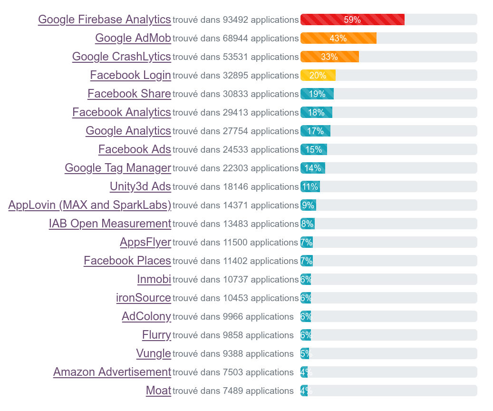

Exodus Privacy
Exodus Privacy — Journées Du Logiciel Libre
Qui sommes-nous ?
De quoi allons-nous vous parler ?
- De ce que font les applications mobiles de nos données et des conséquences sur notre vie privée
- De ce que Exodus Privacy fait en la matière
Exodus Privacy
- Un groupe d'hacktivistes français·e·s
- Une association Loi 1901 créée en octobre 2017
- ~8 bénévoles actif·ves
- Des règles légales strictes
- Nos outils sont libres
Notre objectif
Mieux informer le grand public de la collecte de données faite par les applications de nos téléphones portables
Comment on fait ?
- Nous développons la plateforme d'audit εxodus
- Nous identifions les pisteurs par leurs signatures
- Nous faisons des analyses statiques d'
APK
Nous développons des outils permettant de savoir ce qu'il se passe dans les applications Android.

C'est quoi un pisteur ?
Un pisteur est un bout de logiciel dont le but est la collecte de données à propos de vous et de vos usages.
Comme Ogury, Google Analytics, Teemo, et beaucoup d'autres.
Comment on les détecte ?
Analyse statique
- Listing des classes Java présentes dans l'APK
- Détection des classes correspondant à la signature de pisteurs
Les outils :
- API Google Play/F-Droid : Télécharge les APK et récupère les détails des applications
- Apkeep: Télécharge les APK du magasin Google Play (maintenu par l'EFF)
- Androguard: récupération des permissions, version du code et certificats
- Dexdump: extraction de la liste des classes de l'APK
Analyse statique

Analyse statique

La plateforme εxodus
- Chercher un rapport concernant une application via un moteur de recherche
- Analyser une application Android via son identifiant
- Partager des astuces pour mieux maitriser sa vie privée

https://reports.exodus-privacy.eu.org
L'application Android Exodus
Montrer les pisteurs et permissions requises des applications de votre ordiphone


Disponible sur F-Droid et Google Play !
ETIP
εxodus Tracker Investigation Platform
- La base de données des pisteurs εxodus
- Ouverte à toutes et tous, et alimentée par la communauté
- Principales fonctionnalités :
- Suivre toutes les modifications sur les pisteurs
- Détecter les doublons de signature
https://etip.exodus-privacy.eu.org/
Ce qui a été fait depuis notre lancement
- Nous existons depuis le 24/11/2017 - première version publique
Nous avons…
- Identifié +420 pisteurs, analysé +159 000 apps pour +342 000 rapports
- Réalisé des audits détaillés d'applications comme Deliveroo Rider ou Baby+
- Fourni des statistiques et des jeux de données à des journalistes et analystes
- Mis à disposition une API REST
- Créé des animations pour expliquer les pisteurs dans les applications
- Nous créons un kit pédagogique pour les médiateurices numériques
Tout est libre et open-source 🎄
Pisteurs fréquents sur +159k applications

Partage — Communication & Presse
Communication :
Dans la presse :
Partage — Monde scientifique
Les chercheuses et chercheurs s'emparent de nos outils
- Via notre API REST publique et gratuite
- INRIA, INSA, CNIL
- Des étudiant·es/doctorant·es dans les domaines de la vie privée et des technologies
- Nos travaux sont cités par des insitutions (INRIA), des universitaires (Zuboff)
Partage — Analyses spécifiques
Des analyses poussées avec des journalistes
Partage — Kit pédagogique
Création d'un kit à destination des méditeurices numériques
- 2 kits : Un kit débutant⋅e & un kit confirmé⋅e
- Pour faire des ateliers de 1h30
- Dans chaque kit : un guide, une vidéo, un diaporama, une fiche de synthése
- Financé par la Fondation AFNIC
Ce dont nous avons besoin
Nous sommes une organisation à but non lucratif, animée par des bénévoles.
Pour survivre, il nous faut :
Contributions & Argent
Des humains surtout …


 Code Lutin
Code Lutin Codeurs en liberté
Codeurs en liberté
 F-Droid
F-Droid Gandi
Gandi La Quadrature du Net
La Quadrature du Net Octopuce
Octopuce Yale Privacy Lab
Yale Privacy Lab Framasoft
Framasoft Fondation AFNIC
Fondation AFNIC